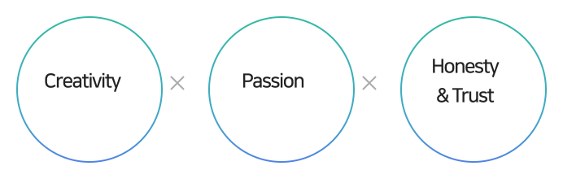
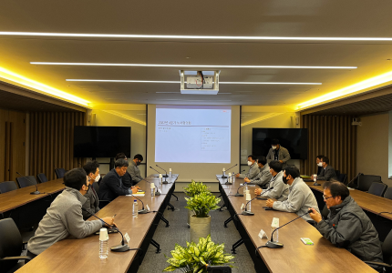
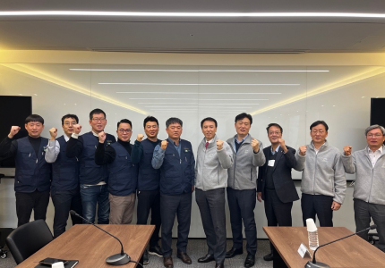

SUSTAINABILITY
Social
Management Coexistence
Management Sharing
Management Quality
Management Human Rights
Management Happiness of
Members
- Members’ Growth
-
In order to reduce the Skill Gap due to rapid changes in technologies and businesses, Dongbu Corporation is supporting the growth and development of members in accordance with the increasing needs for Up-Skill to strengthen previous work capabilities and Re-Skill to cultivate new fields. We recognize the importance of capabilities reinforcement of members and creation of performance through a combination of work and study and introduced <Learning Journey Process>.
Training internal key workers Strengthening leader’s capabilities Subtantialization of organization cultures and mindset - Activation of career development program (CDP)
- Introduction of professional worker training system of each business
- Operating reinforcement education for site manager’s capabilities
-
Setting leader training system of each
position and each career level - Establishment of pipelines of leaders
- Fast adaptation of new employees to ensure full capabilities
- Follow-Up education for employees
- Expanding education course of substantialization of organization cultures
Operating Program
Division Objectives Representative program Cultivation of organization cultures - Cultivation of awareness as being responsible workers among employees and promotion of early settlement (for new employees)
- Acquisition of organization culture by new employees and reinforcement of network in the company
- Follow-Up education
- Introductory education for new employees/experienced employees
Leader capabilities - Understanding importance of responsibilities
- Enhancing work management capabilities
- Course of self/relationship leadership
- Couse of coaching and leadership for performance management
Work capabilities - Enhancing job satisfaction and engagement
- Maximizing performances of an organization by developing members’ capabilities
- Career development program (CDP)
- Reinforcement procedure of possessed capabilities
Training strategic workers - Dissemination of knowledge/performance by fostering professional workforce
- Ensuring competitiveness by fostering strategic workforce required for business operation
- Acquiring master’s degree of area of expertise
- Training system of professional workers for overseas business
Education satisfaction
Division 2021 2022 Online education 4.7 points 4.8 points Introduction education - 4.0 points Follow Up education - 4.6 points ※ Education satisfaction investigation except for online education has been performed since 2022.
Education training costs
Division 2020 2021 2022 Costs (one thousand won) 137,557 170,430 292,651
Member Diversity Among the key values promoted by Dongbu Corporation, creativity and the courage to face new challenges, passion for developing the future with an indomitable will, and honesty and trust that exert a positive influence on clients and society are the most cherished. In addition, we always seek to recruit talented individuals
-
- STEP1
-
No limitations or restrictions
regarding
qualifications of applicants
-
- STEP2
- Evaluation based on cover letter
-
- STEP3
-
Enhancing effectiveness
of human resource
verification
system through scientific analyses
-
- STEP4
-
Operating interview based on
capabilities without
provision
of information to interviewers
such as
academic records.
Although there is traditionally a strong perception that construction is a male-dominated industry,
Dongbu Corporation is striving to dispel this stereotype and arrange personnel policies and site environments
without gender-based discrimination to realize the value of gender equity.

Dongbu Corporation is engaged in the utmost efforts to expand the creation of high-quality corporate social responsibility. For this, Dongbu Corporation will eliminate any kind of discrimination between full-time workers and fixed-term workers and seek improvements for all through the growth of the company and cooperative coexistence with and between members.
- Harmony of Members
-
Labor and Management Harmony
Under the motto of “Happy workplace to promote labor and management harmony”, Dongbu Corporation is taking the lead in creating workplaces that are characterized by camaraderie and cooperation. We are conducting quarterly labor relation council meetings to listen to various opinions of employees and making sustained efforts to continuously enhance the welfare of employees.
Performance of labor relation council operation
Division 2021 2022 Number of councils 4 4 Key agreement performance - Extension of period of preschool payment
- Raise in meal allowance and moving expenses support
- Creation of welfare points in Family Month
- Improvement of payment for other allowances
- 
- 
Health welfare support for stable familiesDongbu Corporation thinks that the health of employees leads to harmony within families. For this, we support the healthy lives of families of members as well as those of members.
- 01
- Supporting health examinations of employees and spouses
-
Dongbu Corporation is helping spouses of employees also receive
the same health examination benefits.
- 02
- Medical expenses support
-
Dongbu Corporation is providing a certain amount of financial
assistance for medical expenses to support the healthy
lives of members.
- 03
- Expanding guaranteed items of group accident insurance
-
Dongbu Corporation is making efforts to gradually expand the
guaranteed amount and range of group accident insurances of
employees every year.
- 04
- Other support
- We are providing financial support for entrance to schools and scholarship funds for employees with children, giving leave for fertility treatments for all employees, and assigning welfare points in Family Month. In order to create a family-friendly environment where members can concentrate on their work tasks free from worries and concerns, we will continuously improve welfare support measures for members.
Dongbu Corporatoin is committed to addressing social problems such as declining fertility and career gaps of women, to create an environment where members can concentrate on their work tasks free from worries and concerns, and to allow employees to use leave for desired periods as much as possible.
Status of maternity leave and paternity leave
Division 2021 2022 Number of workers who used maternity leave Male 1 - Female 1 3 Total 2 3 Return to work after completion of maternity leave Ratio 100% 100% Number of workers who used paternity leave Male 4 5 Female - 5 Total 4 10 Number of workers who returned after paternity leave Male 7 1 Female 1 1 Total 8 2 Return to work after completion of paternity leave Ratio 100% 100%